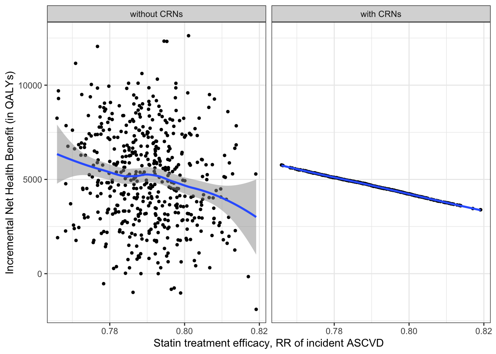
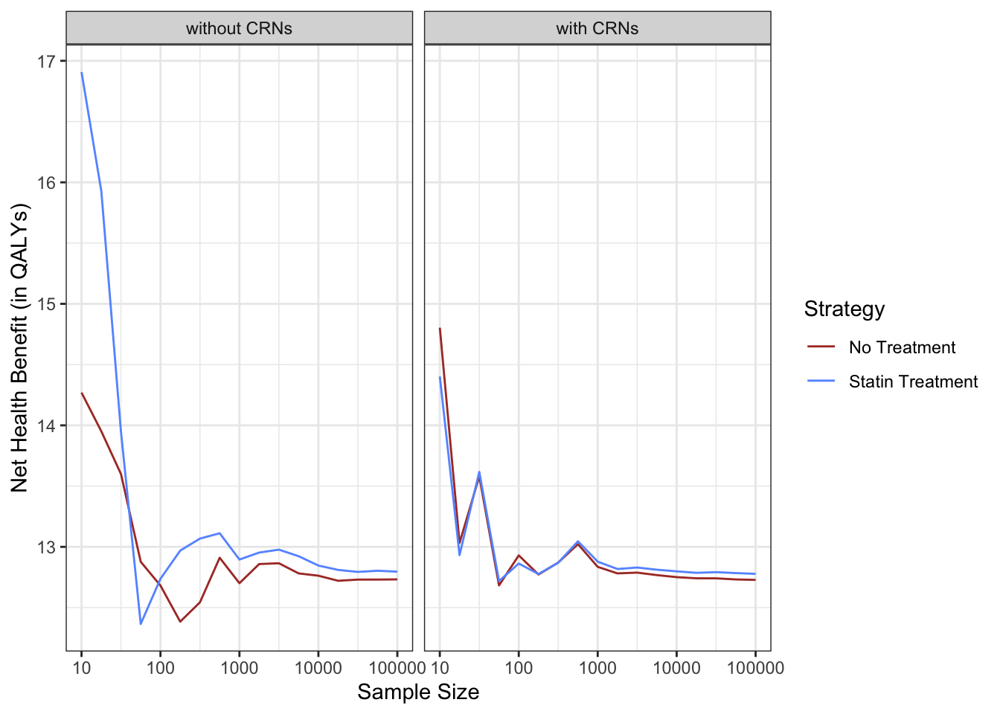

# source("random_draws_for_CVD_PSAs.R")
# output is the dataset
RIPS_CVD_data = function(inputs){
results <- NULL
attributes <- NULL
#outputs <- list()
for (strategy in 0:1){
inputs$strategy = strategy
run <- exec.simulation(inputs)
run$strategy <- strategy
at <- arrange(get_mon_attributes(env),name,key,time) #obtain attributes data
at$strategy <- strategy
if(is.null(results)) { results <- run } else {results <- rbind(results, run)}
if(is.null(attributes)) { attributes <- at } else {attributes <- rbind(attributes, at)}
rm(run)
rm(at)
}
repeatSets = attributes %>% filter((key == "aGetCVD" | key == "aStatinsMildAdverse" | key == "aStatinsMajorAdverse") & is.infinite(value))
casted = setdiff(attributes, repeatSets) %>% select(-replication, -time) %>% spread(key, value)
traces = results %>% select(-start_time, -activity_time, -replication) %>% spread(resource, end_time) %>%
left_join(casted %>% rename(statins_use = aUseStatins, initial_age = AgeInitial), by = c("name", "strategy"))
if (is.null(traces$statins_major_adverse_event)) {traces$statins_major_adverse_event = NA}
# patientWcea = traces %>%
# rowwise() %>%
# mutate(
# cost_disc = basic_CVD_costs_discounted(inputs, death_after_ASCVD, death_of_ASCVD, death_without_CVD, get_CVD, time_in_model, initial_age) + adjustment_statins_costs_discounted(inputs, statins_use, statins_mild_adverse_event, statins_major_adverse_event, get_CVD, time_in_model),
# util_disc = adjusted_statins_utilities_discounted(inputs, statins_use, statins_mild_adverse_event, statins_major_adverse_event, get_CVD, time_in_model))
cost_util = calc_cost_util(death_of_ASCVD_vec = traces$death_of_ASCVD,
get_CVD_vec = traces$get_CVD,
time_in_model_vec = traces$time_in_model,
initial_age_vec = traces$initial_age,
statins_use_vec = traces$statins_use,
statins_mild_adverse_event_vec = traces$statins_mild_adverse_event,
statins_major_adverse_event_vec = traces$statins_major_adverse_event,
n_pop = nrow(traces),
ar = inputs$annual_discount_rate,
bgcost_coef_vec = coef(inputs$model_bgcost),
cvdpct_coef_vec = coef(inputs$model_cvdpct),
cAnnualFU_afterASCVD = inputs$cAnnualFU_afterASCVD,
cNonFatalASCVD = inputs$cNonFatalASCVD,
cFatalASCVD = inputs$cFatalASCVD,
cAnnualStatin = inputs$cAnnualStatin,
cMildStatinAdverse = inputs$cMildStatinAdverse,
cMajorStatinAdverse = inputs$cMajorStatinAdverse,
rInflation2017 = inputs$rInflation2017,
uHealthy = inputs$uHealthy,
uAfterASCVD = inputs$uAfterASCVD,
uHealthyStatin = inputs$uHealthyStatin,
uPenaltyMildStatinAdverse = inputs$uPenaltyMildStatinAdverse,
uPenaltyMajorStatinAdverse = inputs$uPenaltyMajorStatinAdverse)
patientWcea = cbind(traces, cost_util)
return(patientWcea)
}
# output is the ICER
RIPS_CVD_run = function(inputs){
patientWcea = RIPS_CVD_data(inputs)
strategyWcea = patientWcea %>%
group_by(strategy) %>%
summarize(
time_in_model = mean(time_in_model),
cost = mean(cost_disc),
QALY = mean(util_disc)) %>%
mutate(strategy = ifelse(strategy == 1, "Statins(2013 ACC/AHA)", "Status Quo"))
df_cea = calculate_icers(cost = strategyWcea$cost,
effect = strategyWcea$QALY,
strategies = strategyWcea$strategy) %>%
left_join(strategyWcea %>% select(Strategy = strategy, LE = time_in_model))
return(df_cea)
}
strategy_compare = function(patientWcea){
strategyWcea = patientWcea %>%
group_by(strategy) %>%
summarize(
time_in_model = mean(time_in_model),
cost = mean(cost_disc),
QALY = mean(util_disc)) %>%
mutate(strategy = ifelse(strategy == 1, "Treatment", "Status Quo"))
df_cea = calculate_icers(cost = strategyWcea$cost,
effect = strategyWcea$QALY,
strategies = strategyWcea$strategy) %>%
left_join(strategyWcea %>% select(Strategy = strategy, LE = time_in_model)) %>%
mutate(NHB = Effect - Cost/100000)
return(df_cea)
}Common Random Numbers in Discrete Event Simulation for Disease Modeling: A Statin Treatment Case Study
Abstract Body
Purpose: Disease simulation techniques, notably microsimulation and discrete event simulation (DES) models, often are challenged with stochastic noise. This noise can mask true differences between strategies and increase both time and resource costs. Despite the extensive application of Common Random Numbers (CRNs), a variance reduction technique, in microsimulation models, their use in DES for disease modeling remains under-explored. To our knowledge, no study has yet explicitly outlined the steps to incorporate CRNs into DES for disease modeling or quantified the resulting efficiency gains. We aim to bridge this research gap and demonstrate the benefits of CRNs in DES for disease modeling.
Methods: We developed a DES model to evaluate the cost-effectiveness of statin treatment in people aged 40 to 80 in the US at risk of atherosclerotic cardiovascular disease (ASCVD) over a lifetime horizon.The model cohort was populated with the National Health and Nutrition Examination Survey, and parameters were informed from published literature. We compared the incremental net health benefit (iNHB) of statins under two scenarios – with and without the use of CRNs – across a broad range of model cohort sizes. To implement CRNs, we assigned each potential event a patient-specific and event-specific random number that remained consistent across model runs to determine the event occurrence and time to event. Unique to DES, the use of CRNs in our model involved the inverse cumulative distribution function, which transformed CRNs (standard uniform random draws between 0 and 1) into non-uniform quantiles that were used to represent time variables.
Results: Figure Panel A demonstrates that the use of CRNs led to a monotonic function in the model output, where a lower relative risk consistently resulted in a higher iNHB of statins, effectively reducing noise. Panel B indicates that integrating CRNs within DES resulted in faster stabilization of the model-estimated iNHB around the true value with smaller sample sizes, thereby enhancing efficiency.
load("data/rrStatinsASCVD501.RData")
woCRN = all_woCRN %>% filter(Strategy == "Statins(2013 ACC/AHA)") %>% left_join(all_woCRN %>% filter(Strategy == "Status Quo"), by = c("rrStatinsASCVD", "time"), suffix = c("_statins", "_quo")) %>%
mutate(INHB = NHB_statins - NHB_quo,
group = 0)
wCRN = all_wCRN %>% filter(Strategy == "Statins(2013 ACC/AHA)") %>% left_join(all_wCRN %>% filter(Strategy == "Status Quo"), by = c("rrStatinsASCVD", "time"), suffix = c("_statins", "_quo")) %>%
mutate(INHB = NHB_statins - NHB_quo,
group = 1)
rr501 = rbind(woCRN, wCRN) %>%
mutate(group = factor(group, levels = 0:1, labels = c("without CRNs", "with CRNs")))
rrStatins501 =
rr501 %>%
ggplot(aes(x = rrStatinsASCVD, y = INHB)) +
geom_point(size = 1) +
geom_smooth(alpha = 0.5) +
facet_wrap(. ~ group) +
labs(x = "Statin treatment efficacy, RR of incident ASCVD", y = "Incremental Net Health Benefit (in QALYs)") +
theme_bw() +
scale_x_continuous(labels = scales::comma)
load("data/converge100k.RData")
converge_wCRN = strategy_compare(patients_wCRN[1:20,])
converge_woCRN = strategy_compare(patients_woCRN[1:20,])
for (size in round(10^(seq(1.25, 5, by = 0.25)))){
converge_wCRN = rbind(converge_wCRN, strategy_compare(patients_wCRN[1:(2*size),]))
converge_woCRN = rbind(converge_woCRN, strategy_compare(patients_woCRN[1:(2*size),]))
}
converge_wCRN$nPop = rep(round(10^seq(1, 5, by = 0.25)), each = 2)
converge_woCRN$nPop = rep(round(10^seq(1, 5, by = 0.25)), each = 2)
converge_wCRN$nPopLog = rep(seq(1,5,by = 0.25), each = 2)
converge_woCRN$nPopLog = rep(seq(1,5,by = 0.25), each = 2)
converge_wCRN$group = 1
converge_woCRN$group = 0
converge = rbind(converge_woCRN, converge_wCRN) %>%
mutate(group = factor(group, levels = 0:1, labels = c("without CRNs", "with CRNs")),
Strategy = ifelse(Strategy == "Status Quo", "No Treatment", "Statin Treatment"))
converge100k = converge %>%
ggplot(aes(x = nPopLog, y = NHB, color = Strategy)) +
geom_line() +
facet_grid(. ~ group) +
scale_x_continuous(labels = 10^seq(1:5)) +
scale_color_manual(values = c("#AC3931", "#6699ff")) +
labs(x = "Sample Size", y = "Net Health Benefit (in QALYs)") +
theme_bw()
library(ggpubr)
# ggarrange(rrStatins501, converge100k,
# legend = "bottom",
# nrow = 2, heights = c(0.45, 0.55),
# labels = "AUTO")
rrStatins501
converge100k
Conclusion: Previous studies have established DES as a more efficient alternative to microsimulation for disease simulation modeling. Our findings reinforce this advantage, suggesting that when DES is further augmented with CRNs, it can achieve even greater efficiency. With less stochastic noise and faster convergence, this increased efficiency can enable more computationally intensive tasks, such as probabilistic sensitivity analysis, model calibration, and value of information analysis.